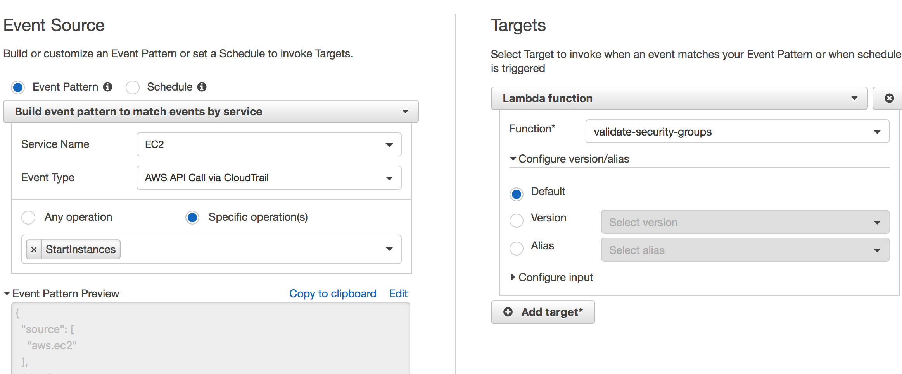
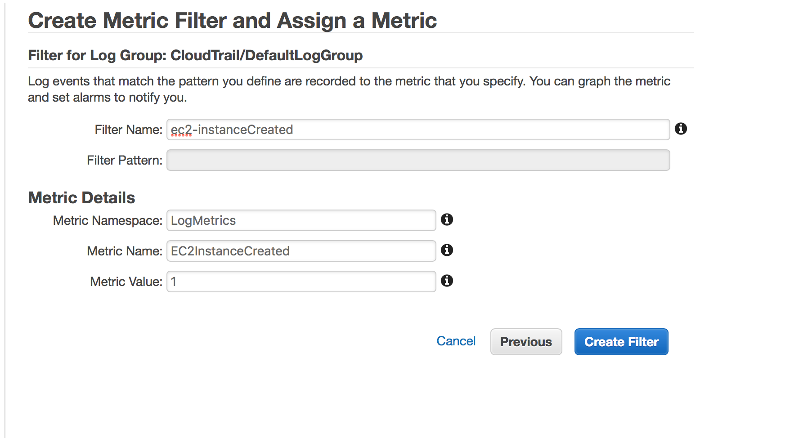
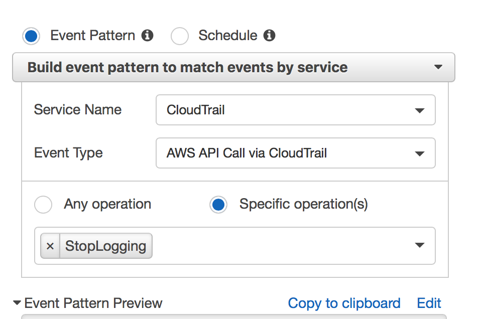
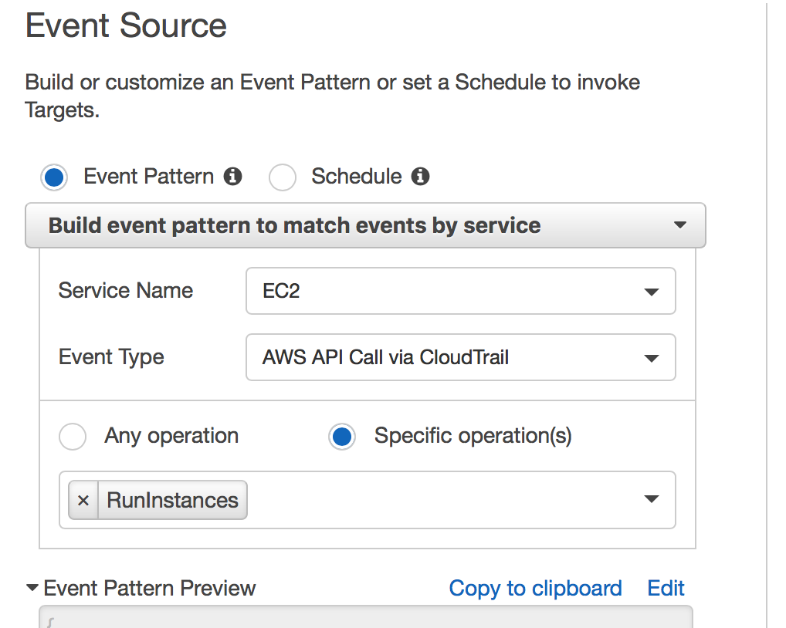
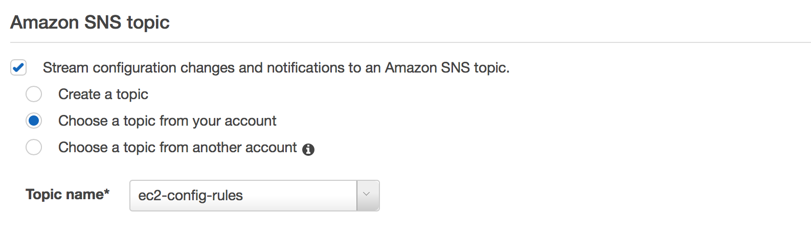
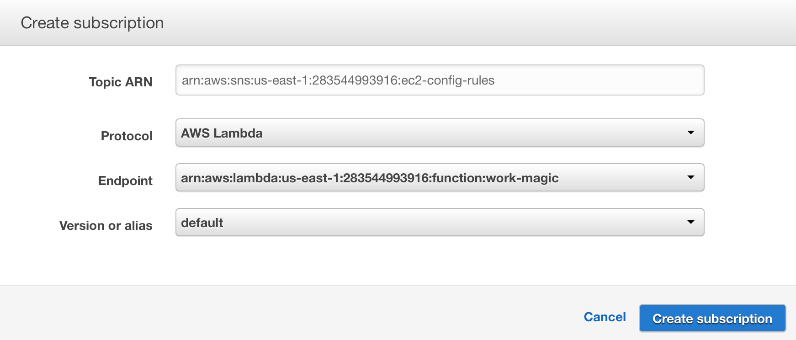
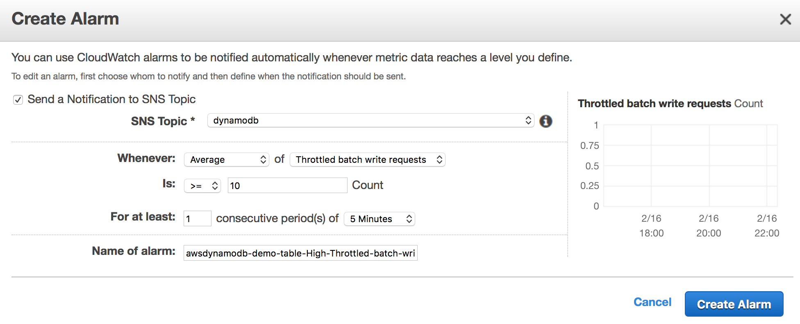
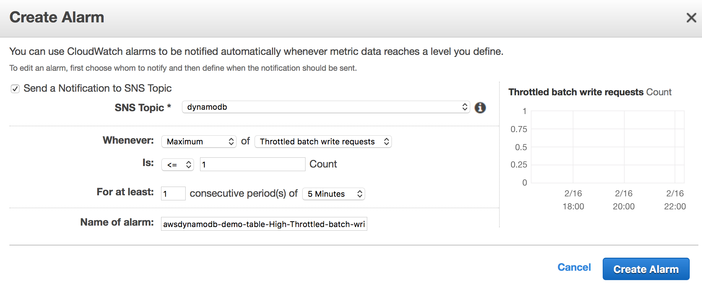

Managing AWS Services with Lambda and CloudWatch
Chris Johnson Bidler
Created: 2017-02-16 Thu 17:25
Your Humble Narrator
Chris Johnson Bidler
- Senior Cloud Computing Engineer @ Transunion
- AWS Certified SAA, Sysops Engineer, Developer
- >15 years dev experience
- Mostly Java, mostly healthcare IT
- Over the last ~4 years, role has evolved:
- dev(ops?) -> devops -> (dev)ops
- @hlprmnky on Twitter and Github
- cjohnso@transunion.com
What this talk is about
Craven theft Standing on the shoulders of giants
At re:Invent this year, I saw several talks with different uses of a new design pattern. I thought I could put them together into a narrative and tell you about it.
The pattern: Lambda as the target for AWS lifecycle events
- You don't get paged with "This thing happened, do something!"
- You get paged with "this thing happened, this action was taken, enjoy your lunch"
What is AWS Lambda?
With apologies to Alan Kay
"LISP AWS Lambda is not a programming language AWS Service; LISP AWS Lambda is a building material"
Disembodied Functions
AWS Lambda allows you to execute stateless functions without knowing or caring about any of the underlying infrastructure.
- Functions receive an event and a context from Lambda
- Can execute for up to 5 minutes
- Can log results and telemetry to CloudTrail
- Can make API calls for side effects
- You get your language's AWS SDK libs pre-loaded
Okay, so how does that help manage services?
var AWS = require('aws-sdk')
function handler(event, context, callback) {
const new_read_capacity = event["read_cap"]
const new_write_capacity = event["write_cap"]
const table_name = event["table_name"]
var dynamo = new AWS.DynamoDB()
const params = {
ProvisionedThroughput: {
ReadCapacityUnits: new_read_capacity,
WriteCapacityUnits: new_write_capacity
},
TableName: table_name
}
dynamodb.updateTable(params, function(err, data) {
if (err) console.log(err, err.stack) // an error occurred
else console.log(data) // successful response
})
callback(null, 'All done all done all done.')
}
CloudWatch
From the horse's mouth
Amazon CloudWatch is a monitoring service for AWS cloud resources and the applications you run on AWS. You can use Amazon CloudWatch to collect and track metrics, collect and monitor log files, set alarms, and automatically react to changes in your AWS resources.
Events - Triggers for action
CloudWatch Events happen when something in your AWS ecology changes, like:
- …a new EC2 instance is created
- …a DynamoDB table exceeds provisioned throughput
- …someone turns off CloudTrail logging
Events have a Target
- Communicate: Send an SNS Message, Publish to SQS or Kinesis
- Builtin Actions: Snapshot EBS, Terminate EC2 instance
- Execute a Lambda function
This is where the magic happens
With an AWS Lambda function as your event target, you can react immediately to any event with a custom response that can be as simple or as complex as you need. 
Scenario 1: Decorating CloudTrail logs
AWS CloudTrail is very granular but individual events don't hold very much information.
Solution: Decorate CloudTrail events using Lambda
- Send CloudTrail events to CloudWatch Logs
- Create a filter on the CloudTrail log stream
- Publish a custom metric
- Alarm on that metric to an SNS topic
- SNS events will have CloudTrail data
Creating the metric filter

Lambda function can "enrich" that data stream
var AWS = require('aws-sdk')
exports.handler = function(event, context, callback) {
var EC2 = AWS.EC2()
const intance_id = event["instanceId"]
const instance_details = EC2.describeInstances([instance_id])
callback(null, instance_details)
}
Here we have seen an example of using the power of Lambda functions to read state from our AWS ecology. What can we do if we start to write state as well?
Scenario 2: Privileged Credentials In the Wild!
The Nightmare Scenario
- A disgruntled employee
- Poorly-designed mobile app leaks an STS credential
- into device logs
- over MitM'd airport wifi
- Despite everyone's best efforts, checked into Github
Maybe your attacker is this guy
But maybe it's this guy
Attacker Plan Of Action
- Create a new IAM resource with elevated permissions
- Log in with the new credentials
- Turn off CloudTrail logging
- Find a nice, quiet region (ap-northeast-1?)
- Spin up a bunch of `f1.16xlarge`s and mine some bitcoin
- By the time you get a billing alert email, attacker is up 0.175BTC
How does Lambda get us inside this attacker's OODA loop?
Response to CloudTrail event
Logging was turned off?

So turn it back on
var aws = require('aws-sdk')
exports.handler = (event, context, callback) => {
const cloudtrail = aws.CloudTrail()
cloudtrail.startLogging({}) // obj can hold a trail ARN if you prefer
callback(null, 'CloudTrail logging restored');
};
…and we're done
Instance created?

Check its attributes and kill any outlier
var AWS = require('aws-sdk')
const ALLOWED_REGIONS = ['us-east-1', 'us-west-1', 'eu-west-2']
exports.handler = (event, context, callback) => {
const region = event['region']
const instance_id = event['instance_id']
if(ALLOWED_REGIONS.indexOf(instance_id) < 0) {
var ec2 = AWS.EC2()
ec2.terminateInstances([instance_id])
}
callback(null, 'Region check complete for instance ' + instance_id)
}
Goal state for our attacker

Let's go back to 'Logging was turned off?' for a second
Also use AWS Config to validate the state of your IAM footprint
var AWS = require('aws-sdk')
const params = {
ConfigurationRecorderName: 'IAM_Global_Permissions' // known correct state of your IAM
}
var config = AWS.ConfigService()
config.startConfigurationRecorder(params, function(err, data) {
if (err) console.log(err, err.stack) // an error occurred
else console.log(data) // successful response
})
Bonus round: Config Rules can have Lambda function targets too
Config rules publish to SNS

SNS fires off a Lambda event

Remediate config outliers within seconds
Scenario 3: "Autoscaling" for DynamoDB?
Remember this?
var AWS = require('aws-sdk')
function handler(event, context, callback) {
const new_read_capacity = event["read_cap"]
const new_write_capacity = event["write_cap"]
const table_name = event["table_name"]
var dynamo = new AWS.DynamoDB()
const params = {
ProvisionedThroughput: {
ReadCapacityUnits: new_read_capacity,
WriteCapacityUnits: new_write_capacity
},
TableName: table_name
}
dynamodb.updateTable(params, function(err, data) {
if (err) console.log(err, err.stack) // an error occurred
else console.log(data) // successful response
})
callback(null, 'All done all done all done.')
}
- Can only do so many times per day
- Maybe cranking up througput isn't always the answer
Set and forget backpressure
- Assuming you have an SQS queue feeding your Dynamo workers:
var AWS = require('aws-sdk')
function handler(event, context, callback) {
var SQS = AWS.SQS()
const queue_url = event['queue_url']
const params = {
Attributes: {
'DelaySeconds' : 25000 // come back tomorrow, we're closed
},
Queue_Url: queue_url
}
SQS.setQueueAttributes(params, function(err, data) {
// ...and so on
}
}
Create an alarm for throttled requests

Create an alarm to unthrottle requests

Wire things up
- Publish alarm events to separate SNS topics
- Connect the two Lambda fns to your two SNS topics
- Backpressure with no server to manage